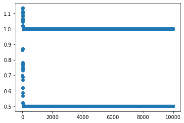
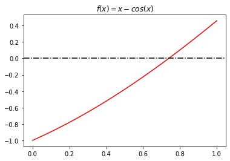

Métodos numéricos para solução de equações não lineares
Escrevemos no parte anterior o resumo dos algoritmos de alguns métodos para solução de equações não lineares, e não são os únicos. Modificações desses métodos, em especial do Método de Newton são constantemente sugeridas para melhorar a convergência. Fica claro que muitos sistemas no mundo real são não lineares. Uma aplicação comum é resolver problemas de otimização. Por exemplo, quando queremos maximizar em conjuntos abertos, se conseguirmos provar algumas condições, podemos assegurar que o máximo se encontra quando . Logo, o problema de otimização se resume a um problema de encontrar raízes.
import numpy as np
import scipy.special as scis
import scipy.optimize as scop
import matplotlib.pyplot as plt
%matplotlib inline
Um jogador A ganha com placar (21-0) do jogador B em um jogo de raquetebol com probabilidade.
em que é a probabilidade de ganhar um rally qualquer. Qual o valor de que assegura que vencerá com esse placar em pelo menos metade dos jogos? Esse é um problema real proposto por Ralph Levine para Joseph Keller.
def P(p):
return (p+1)/2 * (p/(1 + p**2-p))**(21)
p_values = np.linspace(0, 1, 50)
P_values = P(p_values)
plt.plot(p_values, P_values, color='r')
plt.axhline(0.5, linestyle = '--', color = 'darkblue')
plt.title('Probabilidade de 21-0 para cada p')
plt.text(0.7, 0.55, '$P = 0.5$', fontsize=12)
plt.xlabel('$p$')
plt.ylabel('$P$')
plt.show()

Vamos explorar métodos de resolver a equação para , isto é, , através do método do Ponto Fixo e do Método de Newton.
Iteração de Ponto Fixo
Temos que
é a função que admite o ponto fixo que queremos. Um ponto importante seria provar as condições de funcionamento do método. Porém, não é difícil ver que , o que já quebra nosso teorema.
def f(p):
return 0.5 - P(p) + p
def fixed_point(x0, tol = 1e-5, max_ite = 1e4):
x1 = f(x0)
err = [abs(x1 - x0)]
sols = [x0, x1]
while err[-1] > tol and len(err) <= max_ite:
sols.append(f(sols[-1]))
err.append(abs(sols[-1] - sols[-2]))
return {'sol': sols, 'errors': err}
print(f(0.7))
1.1329638832103943
Bom, mas vamos supor que mesmo assim quiséssemos usar esse método.
res = fixed_point(0.7)
plt.scatter(range(len(res['sol'])), res['sol'])
<matplotlib.collections.PathCollection at 0x7f6a17b5eb38>

Ele não converge! Mas a gente já devia ter ficado desconfiado, pois justamente as condições do Teorema não functionavam. Em particular, é fácil ver que ele não é nem não expansivo. Usando Scipy:
scop.fixed_point(func = f, x0 = 0.81, method = 'iteration')
---------------------------------------------------------------------------
RuntimeError Traceback (most recent call last)
<ipython-input-6-93ff8160efab> in <module>
----> 1 scop.fixed_point(func = f, x0 = 0.81, method = 'iteration')
~/anaconda3/lib/python3.7/site-packages/scipy/optimize/minpack.py in fixed_point(func, x0, args, xtol, maxiter, method)
935 use_accel = {'del2': True, 'iteration': False}[method]
936 x0 = _asarray_validated(x0, as_inexact=True)
--> 937 return _fixed_point_helper(func, x0, args, xtol, maxiter, use_accel)
~/anaconda3/lib/python3.7/site-packages/scipy/optimize/minpack.py in _fixed_point_helper(func, x0, args, xtol, maxiter, use_accel)
889 p0 = p
890 msg = "Failed to converge after %d iterations, value is %s" % (maxiter, p)
--> 891 raise RuntimeError(msg)
892
893
RuntimeError: Failed to converge after 500 iterations, value is 0.4998542288112865
Existe uma variação desse dado pelo método Steffensen com Aitken's , que constrói uma sequência com onvergência mais rápida, a partir da inicial.
%timeit scop.fixed_point(func = f, x0 = 0.3, method = 'del2')
1.08 ms ± 120 µs per loop (mean ± std. dev. of 7 runs, 1000 loops each)
scop.fixed_point(func = f, x0 = 0.3, method = 'del2')
array(0.84230479)
%timeit scop.fixed_point(func = f, x0 = 0.8, method = 'del2')
1.21 ms ± 165 µs per loop (mean ± std. dev. of 7 runs, 1000 loops each)
scop.fixed_point(func = f, x0 = 0.8, method = 'del2')
array(0.84230479)
Olhe o que acontece com .
scop.fixed_point(func = f, x0 = 0.1, method = 'del2')
array(-3.51843721e+13)
Método de Newton
Agora vamos usar informação da derivada de para nos ajudar com o problema de encontrar a raíz de . Note que e . }Para nos ajudar com as contas, vamos considerar a versão com log, isto é, . Assim,
o que simplica para . Aí temos que
def g(p):
return np.log(p+1) + 21*(np.log(p) - np.log1p(p**2 - p))
def g_prime(p):
return 1 / (p+1) + 21 / p - 21 * (2*p - 1) / (1 - p + p**2)
Podemos provar analiticamente que a derivada é estritamente positiva, mas faremos a observação numérica através do seguinte gráfico.
g_values = g_prime(p_values[1:])
plt.plot(p_values[1:], g_values, color='r')
plt.title('Derivada da função derivada')
plt.xlabel('$p$')
plt.ylabel("$g\'(p)$")
plt.show()

Aplicando o método de newton através do Scipy. Observe que o seu tempo deu bem menor que o anterior, mesmo com um valor de bem distante.
%timeit scop.newton(func = g, x0 = 0.1, fprime = g_prime)
836 µs ± 117 µs per loop (mean ± std. dev. of 7 runs, 1000 loops each)
scop.newton(func = g, x0 = 0.1, fprime = g_prime)
0.8423047910355657
Observe o método da Secante, um método que também usa a ideia de tangente, mas sem consultar a derivada.
%timeit scop.newton(func = g, x0 = 0.1)
631 µs ± 111 µs per loop (mean ± std. dev. of 7 runs, 1000 loops each)
scop.newton(func = g, x0 = 0.1)
0.8423047910355633
Exemplo adicional
Nesse exemplo, a ideia é verificar que Newton pode dar errado. Considere:
f = lambda x: x * np.sin(np.pi * x) - np.exp(-x)
x = np.linspace(-1, 2, 100)
y = f(x)
fig, ax = plt.subplots()
ax.plot(x, y, color='r',zorder=0)
xs = [0.57, 0.83, -0.27]
texts = ['raiz$_1$', 'raiz$_2$', 'mínimo local']
for i in range(len(xs)):
ax.scatter([xs[i]], [f(xs[i])],marker='x',s=60)
ax.text(xs[i]+0.05, f(xs[i])-0.1, texts[i])
ax.plot(x,np.zeros_like(x),color='gray',ls='-.',alpha=0.75)
ax.set_xlabel('$x$')
ax.set_ylabel('$f(x)$')
plt.title('$f(x)= x sin(\pi x) - exp(-x)$')
plt.show()

xspace = np.linspace(-0.7, 0.7, 15)
for x in xspace:
print('Com x_0 = {0:5.2f}, a raíz é {1:5.2f}'.format(x, scop.newton(f,x)))
Com x_0 = -0.70, a raíz é 2.02
Com x_0 = -0.60, a raíz é 0.58
Com x_0 = -0.50, a raíz é 1.27
Com x_0 = -0.40, a raíz é 0.82
Com x_0 = -0.30, a raíz é -0.30
Com x_0 = -0.20, a raíz é 0.82
Com x_0 = -0.10, a raíz é 2.02
Com x_0 = 0.00, a raíz é 0.82
Com x_0 = 0.10, a raíz é 0.58
Com x_0 = 0.20, a raíz é 0.58
Com x_0 = 0.30, a raíz é 0.58
Com x_0 = 0.40, a raíz é 0.58
Com x_0 = 0.50, a raíz é 0.58
Com x_0 = 0.60, a raíz é 0.58
Com x_0 = 0.70, a raíz é 0.58
Um outro exemplo
Vamos comparar os métodos agora com a função . Para o método do ponto fixo, vamos utilizar a função , naturalmente. Note que e , isto é, temos que as hipóteses para a iteração do ponto fixo são válidas.
def f(x, info):
res = x - np.cos(x)
if info['print']:
info['iter_x'].append(x)
info['iter_res'].append(res)
return res
def g(x, info):
res = np.cos(x)
if info['print']:
info['iter_x'].append(x)
info['iter_res'].append(res)
return res
x = np.linspace(0, 1, 100)
y = f(x, {'iter_x': [], 'iter_res': [], 'print': False})
fig, ax = plt.subplots()
ax.plot(x, y, color='r', zorder=0)
ax.axhline(0, color = 'k', linestyle = '-.')
ax.set_title('$f(x)= x - cos(x)$')
plt.show()

info_newton = {'iter_x': [], 'iter_res': [], 'print': True}
info_secant = {'iter_x': [], 'iter_res': [], 'print': True}
info_bisect = {'iter_x': [], 'iter_res': [], 'print': True}
info_fixed = {'iter_x': [], 'iter_res': [], 'print': True}
newton = scop.newton(func = f,
x0 = 0.5,
fprime = lambda x, info: 1 + np.sin(x),
tol = 1e-10,
maxiter = 200,
args = (info_newton,))
secant = scop.newton(func = f,
x0 = 0.5,
tol = 1e-10,
maxiter = 200,
args = (info_secant,))
bisect = scop.bisect(f = f,
a = 0,
b = 1,
xtol = 1e-10,
maxiter = 200,
args = (info_bisect,))
fixed_point = scop.fixed_point(func = g,
x0 =0.5,
xtol = 1e-10,
bisectmethod = 'iteration',
maxiter = 200,
args = (info_fixed,))
plt.plot(info_bisect['iter_x'], label = 'bisect: {}'.format(len(info_bisect['iter_x'])))
plt.plot(info_newton['iter_x'], label = 'newton: {}'.format(len(info_newton['iter_x'])))
plt.plot(np.array(info_fixed['iter_x']), label = 'fixed point: {}'.format(len(info_fixed['iter_x'])))
plt.plot(info_secant['iter_x'], label = 'secant: {}'.format(len(info_secant['iter_x'])))
plt.legend()
plt.title('Comparando alguns métodos')
plt.xscale('log')
plt.show()